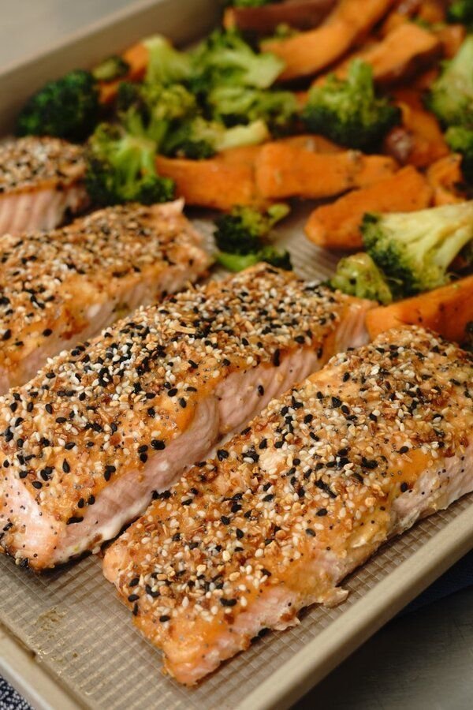

Everything Salmon Sheet Pan Dinner

Description
Delicate salmon with a crunchy topping is paired with tender potatoes and broccoli drizzled with a sweet and spicy mustard glaze in this simple, 30-minute sheet pan dinner. The whole family will love the indulgent taste of this nutritious meal!
Ingredients
- cooking spray
- 2 medium sweet potatoes, sliced into 1/4-inch wedges
- 1 tablespoon olive oil
- Half teaspoon kosher salt, divided
- Quarter teaspoon ground black pepper, divided
- Quarter cup Dijon mustard
- 2 tablespoons honey
- Quarter teaspoon cayenne pepper
- 5 cups broccoli florets
- 4 salmon fillets (5 ounce)
- 2 tablespoons everything bagel seasoning
- 2 teaspoons soy sauce
Steps
- Preheat the oven to 425 degrees F (220 degrees C). Line a large, rimmed baking sheet with foil and coat lightly with cooking spray.
- Toss sweet potatoes with 2 teaspoons oil, 1/4 teaspoon salt, and 1/8 teaspoon pepper in medium bowl. Place on one half of the prepared baking sheet.
- Bake in the preheated oven for 5 minutes.
- While the potatoes are cooking, stir together Dijon, honey, and cayenne in a small bowl. Toss broccoli with remaining oil, salt, and pepper in a separate bowl.
- Remove potatoes from the oven. Add salmon to the other half of the baking sheet. Place 2 teaspoons of the mustard mixture on each salmon filet; brush evenly to coat, then sprinkle evenly with bagel seasoning. Add broccoli to the sweet potatoes. Return to the oven and bake until salmon flakes easily with a fork and the veggies are golden, about 12 minutes.
- Stir soy sauce into the remaining mustard mixture and drizzle over veggies.